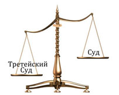

Журнал

Наша Практика
Статьи
Последние статьи
«Индексация заработной платы»
Работодатели откладывают срок выдачи заработной платы все дальше по календарю, пренебрегая указанными в договоре сроками. Как дорого может стоить работодателю такая самодеятельность. И в чем собственно суть индексации заработной платы и других доходов?
Обязанность работодателя своевременно и в полном объеме выплачивать заработную плату своим сотрудникам закреплена в трудовом законодательстве. Согласно нормам закона получать причитающиеся ему деньги работник должен не реже двух раз в месяц (ст. 136 ТК). Конкретные даты расчета с персоналом, по Трудовому кодексу, компании могут установить самостоятельно, закрепив их правилами внутреннего трудового распорядка, в трудовых или коллективных договорах.

«Особенности раздела недвижимого и движимого имущества супругов. Раздел долгов.»
Как правило, приобретаемая в браке недвижимость, оформляется на имя одного из супругов. Но указание в правоустанавливающий документах ФИО и других паспортных данных конкретного человека, ещё не предопределяет его безоговорочного права на данный объект недвижимости.
Для конкретизации права собственности, нужно уточнить, по крайней мере, три момента: время, основание и источник приобретения недвижимого имущества.
«Жалоба в трудовую инспекцию. Теория и практика»
За все время работы юристами компании «ПРАГОС» было подготовлено более 40 жалоб в трудовую инспекцию. Что ж, настало время подвести итоги и посчитать какой совокупный результат принесли эти заявления!? К счастью, нам не пришлось проводить сложные арифметические действия по определению эффективности жалоб в трудовую инспекцию, так как ноль прибавить ноль, прибавить ноль и еще 40 раз прибавить ноль, все равно дает ноль.
«Уголовная ответственность работодателей за нарушение трудового законодательства»
Конституцией РФ предусмотрено право работников на нормальные и безопасные условия труда. Эти условия закреплены в Трудовом кодеке РФ, подзаконных актах и других нормативно-правовых документах. Правила обеспечения нормальных условий труда и техники безопасности позволяют избежать несчастных случаев, таких как вред здоровья работников, их гибель, порча имущества и т.д. От соблюдения работодателем указанных правил зависит безопасность работников. В силу этого закон специально предусматривает ответственность работодателя за соблюдение этих правил, так как от его действий зависит нормальное и безопасное осуществление работниками своих обязанностей. В случае если работодатель допускает нарушение указанных правил, это может привести к печальным последствиям для работников. Тогда работодатель несет административную или уголовную ответственность в зависимости от степени вреда, причиненного работнику.
«Понятие третейского разбирательства»
Третейское разбирательство - культура разрешения споров без участия государства, возникающих при осуществлении частного интереса, в том числе при осуществлении предпринимательской деятельности. Третейские суды разрешают споры, которые возникают только в частной сфере, можно сказать, в гражданском обществе. В силу этого закон запрещает создание третейских судов для разрешения споров, в которых одним из субъектов является государство. Такими спорами являются налоговые, финансовые и другие, которые возникают из административных правоотношений. Данное положение закона исключает самостоятельное разрешение обществом государственных задач при осуществлении государственной власти. В тоже время субъекты гражданских правоотношений могут сами решать свои многочисленные споры без участия государства, прибегая к помощи третейских судов.

«Преимущества третейского разбирательства по отношению к арбитражному и гражданскому судопроизводству»
Третейское разбирательство, несомненно, имеет свои преимущества перед арбитражным и гражданским судопроизводством. Стороны самостоятельно определяют состав третейского суда. Третейский суд может состоять из одного человека или нечетного числа судей. Третейским судьей может быть любой человек, выбираемый сторонами спора. Закон устанавливает, что если третейский суд состоит из одного человека, то он должен иметь высшее юридическое образование. В случае коллегиального разрешения спора высшее юридическое образование должен иметь председатель третейского суда. Требования, которые стороны предъявляют к квалификации третейского судьи, могут быть согласованы ими непосредственно или определяются правилами постоянно действующего третейского суда. Стороны немного ограничены в выборе состава третейского суда в постоянно действующем третейском суде, в "разовом" их выбор практически неограничен.

«Мотивация персонала как метод управления»
Перед каждым руководителем рано или поздно встает вопрос - как сделать так, чтобы его сотрудники стали работать с большей отдачей и эффективностью. Ведь то, что человек устроился на работу и подписал трудовой договор, еще не дает гарантии его ответственного и заинтересованного отношения к своим обязанностям. Понять, что побуждает людей работать и как это желание можно усилить и развить, помогает изучение вопроса мотивационной сферы человека.
«Принятие наследства»
Вопрос о принятии наследства является одним из наиболее актуальных для физических лиц. Сложность для понимания нашего законодательства и не всегда высокая компетентность работников нотариата и юридических консультаций приводит к нежелательным правовым последствиям.
Пример из практики: 15 ноября 2005 года у гражданки Р. умерла мать. 30 ноября 2005 года гражданка Р. обратилась к нотариусу, который сказал ей, чтобы она приходила принимать наследство через шесть месяцев после обращения к нотариусу. Когда же гражданка Р. пришла через шесть месяцев, нотариус отказался оформлять наследство, так как прошел срок, установленный законодательством, для принятия наследства. Гражданка Р. была вынуждена обращаться в суд для восстановления срока для принятия наследства, что привело к дополнительным материальным и временным затратам.
«Административная ответственность работодателей за нарушение трудового законодательства»
Административная ответственность работодателя устанавливается в целях защиты работника. Работодатель более профессиональный игрок в трудовой деятельности, у него есть соблазн эксплуатировать работника. Для того, чтобы обеспечить работнику нормальные и безопасные условия труда, достойную заработную плату, нормальный досуг, государство создало правила организации и охраны труда, установило трудовые гарантии для работников, которые указаны в Трудовом кодексе Российской Федерации.
«Правовое государство»
Правовое государство - это модель идеального государства с точки зрения юриспруденции, идеал к которому следует стремиться общими усилиями личности, общества и государства. Правовое государство выгодно всем, оно позволяет реализовать обоснованные интересы всех граждан и их объединений правовыми методами. Основной целью правового государства является общее благо, достойная жизнь для всех. Следует рассмотреть эту модель и уяснить ее сущность.